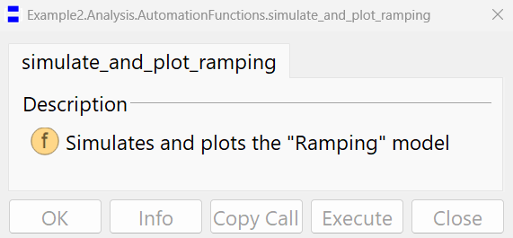
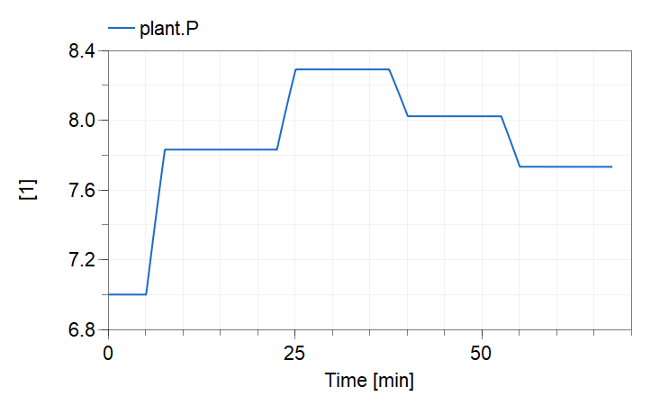
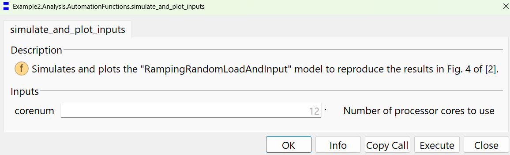
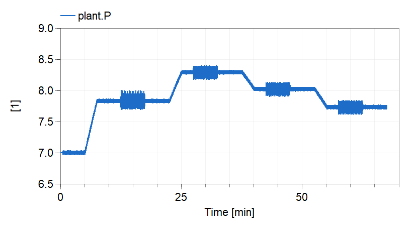
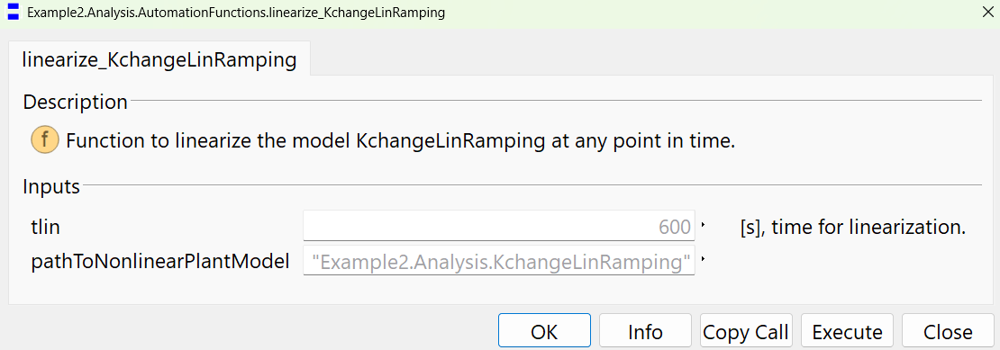
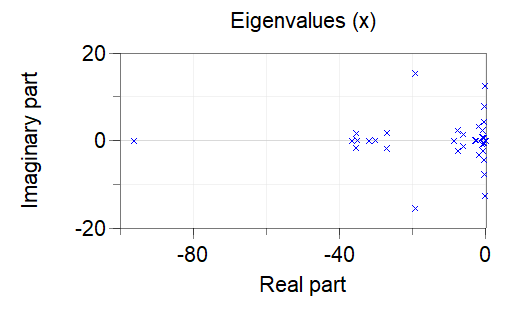

Provides functions for automation of simulation and linearization using the models of the upper layer package
This package contains functions that automate the simulation, plotting and linearization of the models under Example2.Analysis.
Extends from Modelica.Icons.FunctionsPackage (Icon for packages containing functions).
| Name | Description |
|---|---|
| Simulates and plots the "Ramping" model | |
| Simulates and plots the "RampingRandomLoadAndInput" model to reproduce the results in Fig. 4 of [2]. | |
| Function to linearize the model KchangeLinRamping at any point in time. |
Simulates and plots the "Ramping" model
Usage:

Sample Output:
Running the function will result in the following plot.

Extends from Modelica.Icons.Function (Icon for functions).
Simulates and plots the "RampingRandomLoadAndInput" model to reproduce the results in Fig. 4 of [2].
Usage:

Sample output:
Running the function will result in the following plot.

Note:
Please observe that running this function involves simulating the Example2.Analysis.RampingRandomLoadAndInput model, which takes subtantially more time compared to example Example2.Analysis.Ramping, the reason is that both random load and probing signals are added to the model which results in an additional computation burden.
This function calls the Example2.Utilities.SetupSolverSettings.On function that configures several flags to improve simulation speed, however, even by enabling these features, the simulation is time consuming.
For example, running the model using a computer with an 13th Gen Intel(R) Core(TM) i9-13900K, 3.00 GHz, processor and 128 GB DDR4 RAM, setup to use 12 cores, gave the following metrics:
Integration terminated successfully at T = 4050
CPU-time for integration : 1.14e+03 seconds
CPU-time for one grid interval : 227 milliseconds
CPU-time for initialization : 0.004 seconds
Number of result points : 961436
Number of grid points : 5001
Number of accepted steps : 9072834
Number of f-evaluations (dynamics) : 18084763
Number of crossing function evaluations : 9575493
Number of Jacobian-evaluations : 3918760
Number of model time events : 476996
Number of input time events : 0
Number of state events : 3815
Number of step events : 0
Minimum integration stepsize : 2.78e-10
Maximum integration stepsize : 0.00922
Maximum integration order : 5
Looking at the first two lines of the metrics shows that running the model for 67.5 min (4050 sec.) took 19 min (1.14e+03 sec.).
Naturally, using a computer with a weaker processor and lower memory will lead to longer run times.
Recall that the purpose of this simulation is to use it as input for system identification purposes as explained in [2]. If this is not necessary for your purposes, it is recommended that you run instead the function Example2.Analysis.AutomationFunctions.simulate_and_plot_ramping, which takes substantially less time to execute.
Extends from Modelica.Icons.Function (Icon for functions).
| Name | Description |
|---|---|
| corenum | Number of processor cores to use |
Function to linearize the model KchangeLinRamping at any point in time.
Usage:

Sample Output:
Executing the function will produce the following output in the "Commands" window.
Example2.Analysis.AutomationFunctions.linearize_KchangeLinRamping();
Setting up things...
DAE Mode is turned off.
Global optimization is disabled.
Sparse options disabled.
Number of cores reset to default:1
Starting simulation and linearization...
Declaring Modelica_LinearSystems2.StateSpace ss
System not printed since too large (only dimensions):
ss.A[52,52]
ss.B[52,2]
ss.C[1,52]
ss.D[1,2]
The linear model is in your working directory.
Open the dslin.mat file following the instructions in the documentation.
You can also analyze the linear model using Dymola, for example typing in the commands window
Modelica_LinearSystems2.StateSpace.Plot.polesAndZeros(ss, zeros=false, print=true);
will give you the polte plot shown in the Simulation tab and printed below.
Eigenvalues
number |
eigenvalue |
time constant [s] |
freq. [Hz] |
damping |
1 |
-9.6302e+01 |
0.0104 |
--- |
--- |
2 |
-3.6638e+01 |
0.0273 |
--- |
--- |
3 |
-3.5158e+01 |
0.0284 |
--- |
--- |
4 |
-3.2041e+01 |
0.0312 |
--- |
--- |
5 |
-3.0284e+01 |
0.0330 |
--- |
--- |
6 |
-8.8114e+00 |
0.1135 |
--- |
--- |
7 |
-2.9847e+00 |
0.3350 |
--- |
--- |
8 |
-2.6309e+00 |
0.3801 |
--- |
--- |
9 |
-2.6309e+00 |
0.3801 |
--- |
--- |
10 |
-2.6309e+00 |
0.3801 |
--- |
--- |
11 |
-2.6309e+00 |
0.3801 |
--- |
--- |
12 |
-2.6845e-01 |
3.7251 |
--- |
--- |
13 |
-2.0210e-01 |
4.9480 |
--- |
--- |
14 |
-1.0045e-01 |
9.9550 |
--- |
--- |
15 |
-1.0000e-03 |
1000.0000 |
--- |
--- |
16 |
-1.0000e-03 |
1000.0000 |
--- |
--- |
17 |
-1.0000e-03 |
1000.0000 |
--- |
--- |
18 |
-1.0000e-03 |
1000.0000 |
--- |
--- |
19 |
-1.0000e-03 |
1000.0000 |
--- |
--- |
20 |
-1.0000e-03 |
1000.0000 |
--- |
--- |
21 |
-1.0000e-03 |
1000.0000 |
--- |
--- |
22 |
-1.0000e-03 |
1000.0000 |
--- |
--- |
23 |
-1.0000e-03 |
1000.0000 |
--- |
--- |
24 |
-1.0000e-03 |
1000.0000 |
--- |
--- |
25 |
-1.0000e-03 |
1000.0000 |
--- |
--- |
26 |
-2.3147e-11 |
43201899570.2696 |
--- |
--- |
27/28 |
-5.4079e-01 ± 5.7943e-01j |
--- |
0.1261 |
0.6823 |
29/30 |
-8.0667e-01 ± 6.7953e-01j |
--- |
0.1679 |
0.7648 |
31/32 |
-1.0771e+00 ± 7.9290e-01j |
--- |
0.2129 |
0.8053 |
33/34 |
-6.1592e+00 ± 1.3658e+00j |
--- |
1.0041 |
0.9763 |
35/36 |
-3.5516e+01 ± 1.7019e+00j |
--- |
5.6591 |
0.9989 |
37/38 |
-2.7143e+01 ± 1.7900e+00j |
--- |
4.3294 |
0.9978 |
39/40 |
-7.7748e+00 ± 2.2977e+00j |
--- |
1.2903 |
0.9590 |
41/42 |
-8.9136e-01 ± 2.3424e+00j |
--- |
0.3989 |
0.3556 |
43/44 |
-2.0278e+00 ± 3.2527e+00j |
--- |
0.6100 |
0.5290 |
45/46 |
-5.9884e-01 ± 4.3219e+00j |
--- |
0.6944 |
0.1372 |
47/48 |
-4.5810e-01 ± 7.7372e+00j |
--- |
1.2336 |
0.0591 |
49/50 |
-3.2689e-01 ± 1.2572e+01j |
--- |
2.0016 |
0.0260 |
51/52 |
-1.9334e+01 ± 1.5400e+01j |
--- |
3.9339 |
0.7822 |
The following pole plot is generated in the Simulation tab:

Post-processing in MATLAB:
The obtained linear model can be used in any other environment. The linear model is available in the file, dslin.mat, that will appear under your Dymola working directory. It can be loaded in MATLAB using the function:
[A,B,C,D,xName,uName,yName] = tloadlin('dslin.mat')
To use this function, add to the MATLAB workspace the directory and sub-directories under: C:\Program Files\Dymola 2024x\Mfiles
Extends from Modelica.Icons.Function (Icon for functions).
| Name | Description |
|---|---|
| tlin | [s], time for linearization. |
| pathToNonlinearPlantModel |